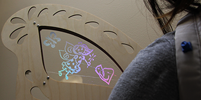
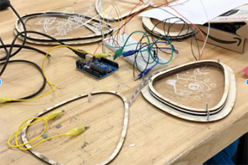

Social Butterfly
Articulated butterfly wings
Spring 2018
 Nominated/pending for publication in Made in Berkeley
Nominated/pending for publication in Made in BerkeleyLink to our video about the Social Butterfly

Purpose
Social Butterfly was the collaborative effort of me, Justine Chia, Varna Vasudevan, and Yuki Zhan for Spring 2018's offering of Critical Making.Our intention was to create wearable wings for the purpose of activity-based socialization amongst children. Wings are playful, confident, and larger-than-life, and we wanted to create a prototype that could reflect that positive change within a wearer. Our wings had a toggle that could trigger motor-actuated fluttering motion to attract the attention of nearby playmates.
They also incorporated six acrylic panels that children could customize. By drawing or etching tokens of what they love upon them, wearers could hold their personalized ice breakers close. When the panels were tapped upon, they would illuminate from capacitative touch.
These wings were meant to foster conversation and celebrate creativity. We were incredibly fortunate to have our design process guided by the expertise of Invention Lab managers and supervisors Chris Myers, Kuan-Ju Wu, and Mitchell Karchemsky.
Process
As we were challenged to create a cosmetic computing wearable for our last class provocation, we began by affinity mapping our concept of wearables and the types of technologies we felt like exploring. We were entranced by things as extravagant as iconic Victoria Secret wings to things as everyday as backlit LED word clocks. Initially, our wearable careened towards the theme of self-esteem and body positive, which is reflected in some of our first lo-fi prototypes.After some cross-critiquing and hands-on exploration, we pivoted away from some of the concepts we originally toyed with: projections, mechanical hinges, words as display content, and static wings. We decided instead on two interactions: capacitative touch illumination and living hinges for flexible flapping. We set the following goals for our prototype:
- Foster Communication
- Encourage Social Conversation
- Attract the Attention of Nearby Playmates
- Personalizable Aspect of the Overall Design
Chris Myers helped immensely with the two-state fluttering mechanism by brainstorming, sketching, and rapid prototyping with us. We first created an iteration of the mechanism by changing the tension of rope with a motor. By appending living hinges to the ends of the rope, we realized we could simulate fluttering.


Technical Implementation
To implement our goals, we needed a motor circuit and a capacitative touch circuit. We drove a motor using the analog read of a potentiometer. Our capacitative touch circuit registered touch and would swap illumination once another online panel was touched.

Reflection
Major challenges in our design were creating something lightweight enough to be worn, fastening a circuit vertically so that it could defy gravity, and creating just the right amount of force to pull the living hinge back without damaging its integrity.
The craft, technology, art, confidence, and personality expressed by this unconventional wearable fit the balance of hacking culture, crafts, and technology that was at the core of Critical Making.